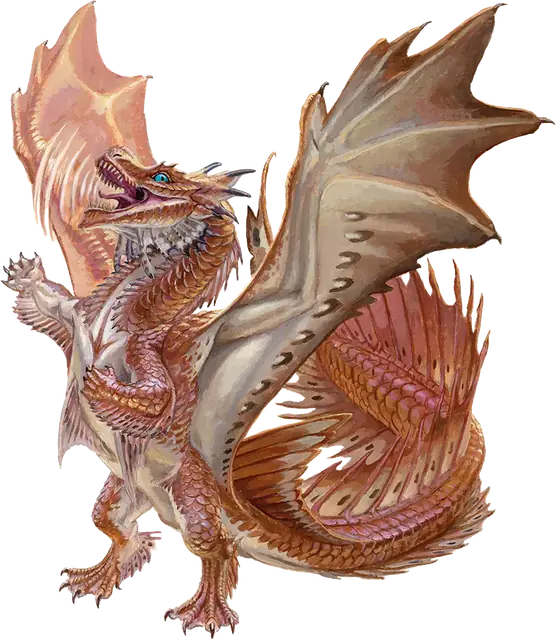

Вирмлинг бронзового дракона
Bronze Dragon Wyrmling
Средний Дракон (Металлический), Принципиальный Добрый

Класс Защиты 15 Инициатива +2 (12)
Хиты 39 (6к8 + 12)
Скорость 30 футов, Плавания 30 футов, Полёта 60 футов
| мод | спас | ||
|---|---|---|---|
| СИЛ | 17 | +3 | +3 |
| ЛОВ | 10 | +0 | +2 |
| ТЕЛ | 15 | +2 | +2 |
| мод | спас | ||
|---|---|---|---|
| ИНТ | 12 | +1 | +1 |
| МДР | 11 | +0 | +2 |
| ХАР | 15 | +2 | +2 |
Иммунитеты Электричество
Чувства Тёмное зрение 60 футов, пассивное Восприятие 14, Слепое зрение 10 футов
Языки Драконий
Опасность 2 (450 опыта; БВ +2)
Особенности
Амфибия. Дракона может дышать как воздухом, так и под водой.
Действия
Мультиатака. Дракон совершает две атаки Раздиранием.
Раздирание. Бросок рукопашной атаки: +5, досягаемость 5 фт. Попадание: 8 (1к10 + 3) Рубящего урона.
Дыхание молнии (Перезарядка 5–6). Спасбросок Ловкости: Сл 12, каждое существо в Линии длиной 40 футов и шириной 5 футов. Провал: 16 (3к10) урона Электричеством. Успех: Только половина урона.
Отторгающее дыхание. Спасбросок Силы: Сл 12, каждое существо в 30-футовом Конусе. Провал: Цель отталкивается от дракона на расстояние до 20 футов по прямой и Опрокидывается.
Бонус мастерства +2
Среда обитания Прибрежье
Сокровища Инструментальные
Бронзовые драконы
Драконы развития и защиты
В местах, где обитают бронзовые драконы, происходят чудеса. Эти металлические драконы отличаются как воображением, так и рассудительностью; они и сами стремятся к величию, и помогают другим реализовать свой потенциал. Их цель — охранять полезные идеи и изобретения, будь то наследие исчезнувших цивилизаций или новые открытия, и делать эти достижения доступными для всех. Когда дело касается недолго живущих недолго существ, бронзовые драконы стараются завоевать их доверие с помощью бесед и советов, однако они всегда готовы вступить в сражение со злодеями, которые мешают другим раскрыть свой потенциал.
Этих драконов привлекает сила и бескрайние просторы морей, и они часто устраивают свои логова в живописных уголках природы или поселениях, которые стремятся защитить. В своих жилищах бронзовые драконы собирают вещи, которые, по их мнению, могут оказаться полезными в будущем. Они также спасают потерянные в море сокровища, возвращают утраченное имущество и поднимают на поверхность затонувшие корабли.
Вирмлинги бронзового дракона считают, что им по плечу любое дело, и хотят доказать это. Как правило, они берут на себя решение местных проблем, таких как засуха или бесчинства бандитов.
Их энтузиазм очарователен, но порой эти вирмлинги ввязываются в ситуации, из которых им не выбраться без посторонней помощи.